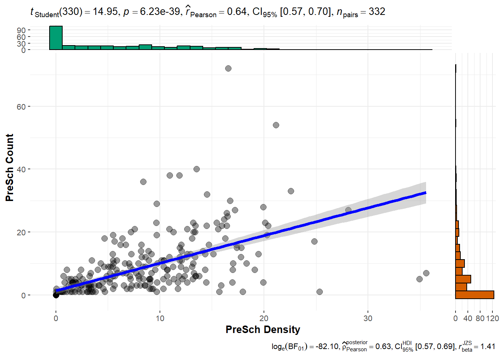

pacman::p_load(tidyverse, sf, ggstatsplot)In-class Exercise 1
Getting started
For the purpose of this in-class exercise, tidyverse, sf and ggstatsplot packages will be used. Write a code chunk to check if these two packages have been installed in R. If yes, load them in R environment.
Working with Master Plan Planning Sub-zone Data
- Create a sub-folder called data in In-class_Ex01 folder.
- If necessary visit data.gov.sg and download Master Plan 2014 Subzone Boundary (Web) from the portal. You are required to download both the ESRI shapefile and kml file.
- Write a code chunk to import Master Plan 2014 Subzone Boundary (Web) in shapefile and kml save them in sf simple features data frame.
mpsz_shp <- st_read(dsn = "data/",
layer = "MPSZ-2019")Reading layer `MPSZ-2019' from data source
`D:\tskam\IS415_AY2024-25T1\In-class_Ex\In-class_Ex01\data'
using driver `ESRI Shapefile'
Simple feature collection with 332 features and 6 fields
Geometry type: MULTIPOLYGON
Dimension: XY
Bounding box: xmin: 103.6057 ymin: 1.158699 xmax: 104.0885 ymax: 1.470775
Geodetic CRS: WGS 84mpsz_kml <- st_read("data/MP19_SUBZONE_WEB_PL.kml")Reading layer `URA_MP19_SUBZONE_NO_SEA_PL' from data source
`D:\tskam\IS415_AY2024-25T1\In-class_Ex\In-class_Ex01\data\MP19_SUBZONE_WEB_PL.kml'
using driver `KML'
Simple feature collection with 332 features and 2 fields
Geometry type: MULTIPOLYGON
Dimension: XY, XYZ
Bounding box: xmin: 103.6057 ymin: 1.158699 xmax: 104.0885 ymax: 1.470775
z_range: zmin: 0 zmax: 0
Geodetic CRS: WGS 84Working with Pre-school Location Data
- If necessary visit data.gov.sg and download Pre-Schools Location from the portal. You are required to download both the kml and geojson files.
- Write a code chunk to import Pre-Schools Location in kml geojson save them in sf simple features data frame.
preschool_kml <- st_read("data/PreSchoolsLocation.kml")Reading layer `PRESCHOOLS_LOCATION' from data source
`D:\tskam\IS415_AY2024-25T1\In-class_Ex\In-class_Ex01\data\PreSchoolsLocation.kml'
using driver `KML'
Simple feature collection with 2290 features and 2 fields
Geometry type: POINT
Dimension: XYZ
Bounding box: xmin: 103.6878 ymin: 1.247759 xmax: 103.9897 ymax: 1.462134
z_range: zmin: 0 zmax: 0
Geodetic CRS: WGS 84preschool_geojson <- st_read("data/PreSchoolsLocation.geojson") Reading layer `PreSchoolsLocation' from data source
`D:\tskam\IS415_AY2024-25T1\In-class_Ex\In-class_Ex01\data\PreSchoolsLocation.geojson'
using driver `GeoJSON'
Simple feature collection with 2290 features and 2 fields
Geometry type: POINT
Dimension: XYZ
Bounding box: xmin: 103.6878 ymin: 1.247759 xmax: 103.9897 ymax: 1.462134
z_range: zmin: 0 zmax: 0
Geodetic CRS: WGS 84Handling Coordinate Systems
Checking coordinate system
Write a code chunk to check the project of the imported sf objects.
st_crs(mpsz_shp)Coordinate Reference System:
User input: WGS 84
wkt:
GEOGCRS["WGS 84",
DATUM["World Geodetic System 1984",
ELLIPSOID["WGS 84",6378137,298.257223563,
LENGTHUNIT["metre",1]]],
PRIMEM["Greenwich",0,
ANGLEUNIT["degree",0.0174532925199433]],
CS[ellipsoidal,2],
AXIS["latitude",north,
ORDER[1],
ANGLEUNIT["degree",0.0174532925199433]],
AXIS["longitude",east,
ORDER[2],
ANGLEUNIT["degree",0.0174532925199433]],
ID["EPSG",4326]]Transforming coordinate system
Re-write the code chunk to import the Master Plan Sub-zone 2019 and Pre-schools Location with proper transformation
mpsz <- st_read(dsn = "data/",
layer = "MPSZ-2019") %>%
st_transform(crs = 3414)Reading layer `MPSZ-2019' from data source
`D:\tskam\IS415_AY2024-25T1\In-class_Ex\In-class_Ex01\data'
using driver `ESRI Shapefile'
Simple feature collection with 332 features and 6 fields
Geometry type: MULTIPOLYGON
Dimension: XY
Bounding box: xmin: 103.6057 ymin: 1.158699 xmax: 104.0885 ymax: 1.470775
Geodetic CRS: WGS 84preschool <- st_read("data/PreSchoolsLocation.kml") %>%
st_transform(crs = 3414)Reading layer `PRESCHOOLS_LOCATION' from data source
`D:\tskam\IS415_AY2024-25T1\In-class_Ex\In-class_Ex01\data\PreSchoolsLocation.kml'
using driver `KML'
Simple feature collection with 2290 features and 2 fields
Geometry type: POINT
Dimension: XYZ
Bounding box: xmin: 103.6878 ymin: 1.247759 xmax: 103.9897 ymax: 1.462134
z_range: zmin: 0 zmax: 0
Geodetic CRS: WGS 84Geospatial Data Wrangling
Point-in-Polygon count
Write a code chunk to count the number of pre-schools in each planning sub-zone.
mpsz <- mpsz %>%
mutate(`PreSch Count` = lengths(st_intersects(mpsz, preschool)))Computing density
Write a single line code to perform the following tasks:
Derive the area of each planning sub-zone.
Drop the unit of measurement of the area (i.e. m^2)
Calculate the density of pre-school at the planning sub-zone level.
mpsz <- mpsz %>%
mutate(Area = units::drop_units(
st_area(.)),
`PreSch Density` = `PreSch Count` / Area * 1000000
)Statistical Analysis
Using appropriate Exploratory Data Analysis (EDA) and Confirmatory Data Analysis (CDA) methods to explore and confirm the statistical relationship between Pre-school Density and Pre-school count.
Tip: Refer to ggscatterstats() of ggstatsplot package.
mpsz$`PreSch Density` <- as.numeric(as.character(mpsz$`PreSch Density`))
mpsz$`PreSch Count` <- as.numeric(as.character(mpsz$`PreSch Count`))
mpsz <- as.data.frame(mpsz)
ggscatterstats(data = mpsz,
x = `PreSch Density`,
y = `PreSch Count`,
type = "parametric")
Commet: